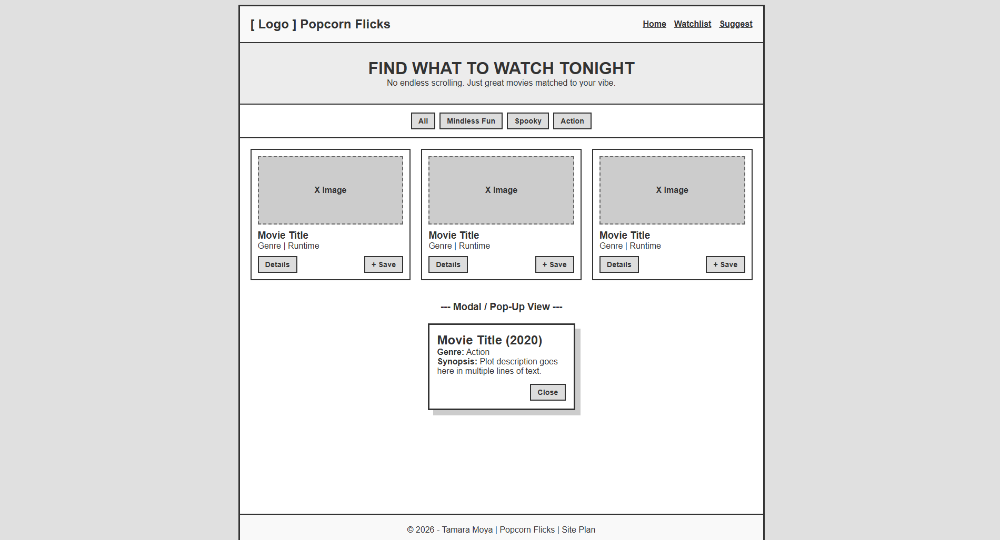
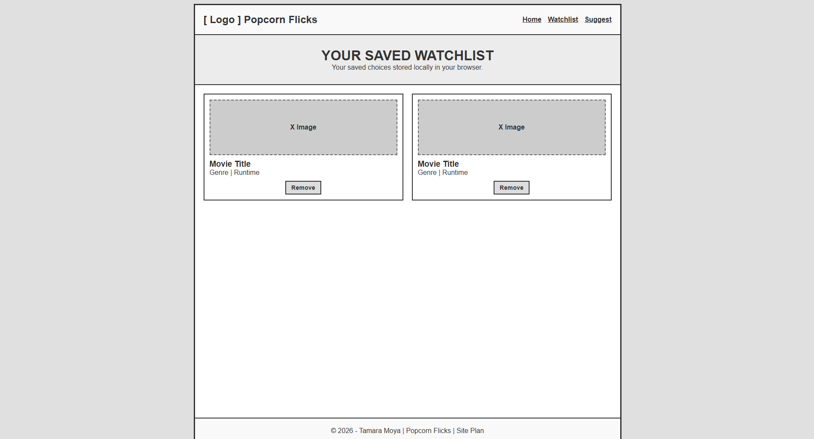
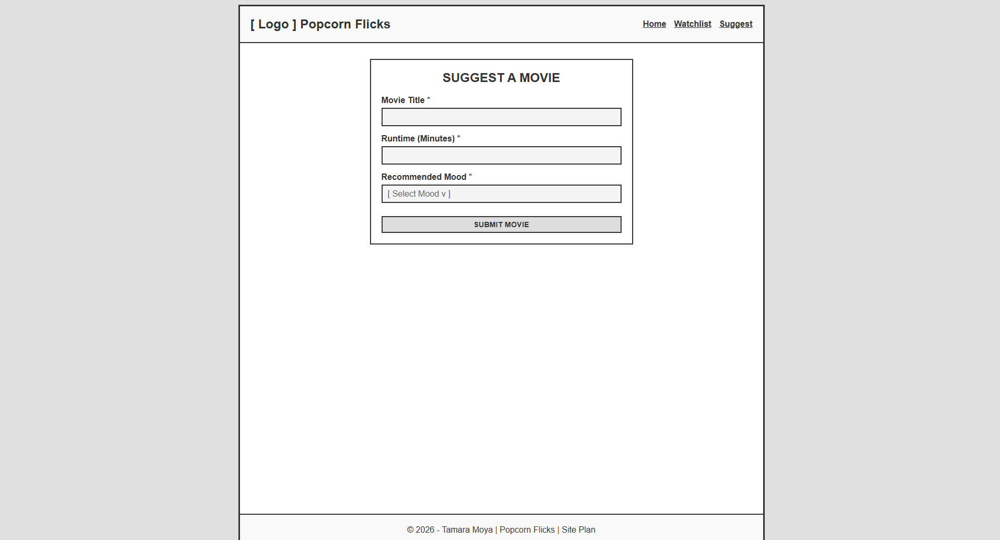
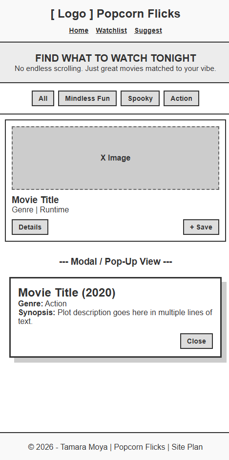
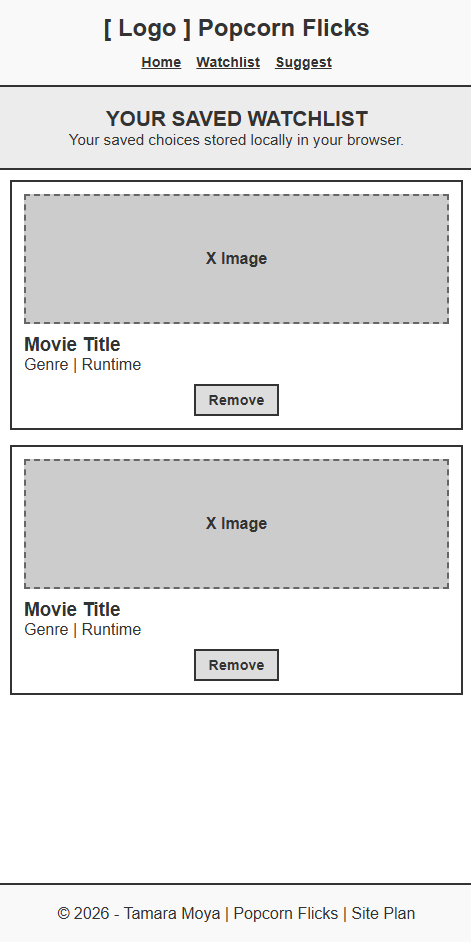
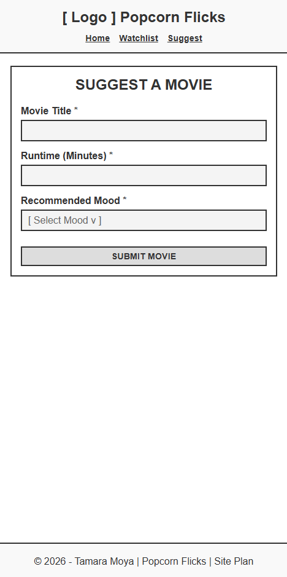

Site Name
Site Name: Popcorn Flicks
Why this name was selected: "Popcorn Flicks" immediately conveys a fun, easygoing, and entertaining movie experience. It reflects the site's goal of helping users find quick, engaging movies to watch without endless scrolling.
Site Purpose
The purpose of Popcorn Flicks is to solve decision paralysis for movie viewers by providing a curated,
searchable hub of high-rated, shorter, and crowd-pleasing films. The site allows users to filter movies
by mood or runtime, save favorite picks into a custom watchlist using localStorage, view
extended movie details via dynamic modals, and submit movie suggestions through an interactive form.
Target Audience Scenarios
- Scenario 1: "I only have 90 minutes before bedtime—what is a short, fun movie I can watch tonight?"
- Scenario 2: "I want something light and comforting after a long workday; how can I filter movies specifically by mood?"
Color Scheme
The color palette is designed to evoke a dark cinema vibe while maintaining accessibility and readability.
#121212
#1F1F1F
#E50914
#FFD700
#FFFFFF
- Primary Dark (#121212): Used as the main body background to establish a sleek theater dark mode.
- Card Surface (#1F1F1F): Used for movie cards, navigation background, and section containers to create visual contrast.
- Popcorn Red Accent (#E50914): Used for buttons, active state highlights, borders, and call-to-action elements.
- Cinema Gold (#FFD700): Used for star ratings, secondary badges, and highlighted text.
- Primary Text (#FFFFFF): Used for main body text and headings to ensure high contrast and legibility.
Typography
Two complementary Google Fonts are used throughout the site to create a clean, modern typographic hierarchy:
Montserrat (Headings & Navigation)
Used for all primary title tags (h1, h2, h3), brand logo text,
and main navigation links. Gives a bold, movie-poster feel.
Open Sans (Body Text & Content): Used for all paragraphs, movie descriptions, card details, form controls, and footer information to ensure clean readability on mobile and desktop screens.
Wireframes
Below are the mobile and desktop wireframe sketches for the three primary pages of the Popcorn Flicks website.
Desktop View
1. Home Page (index.html)

2. Watchlist Page (watchlist.html)

3. Suggestion Form Page (suggest.html)

Mobile View
1. Home Page (index.html)

2. Watchlist Page (watchlist.html)

3. Suggestion Form Page (suggest.html)
